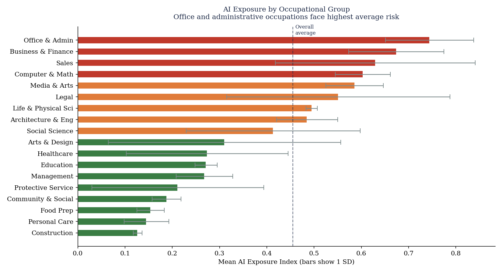
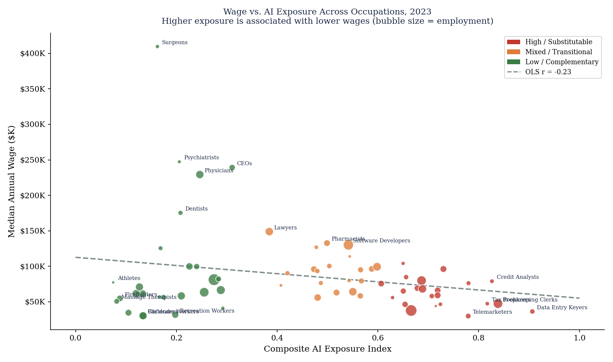
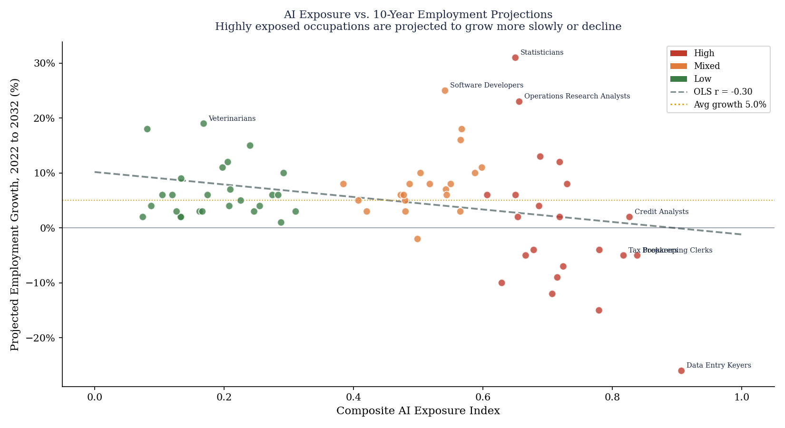
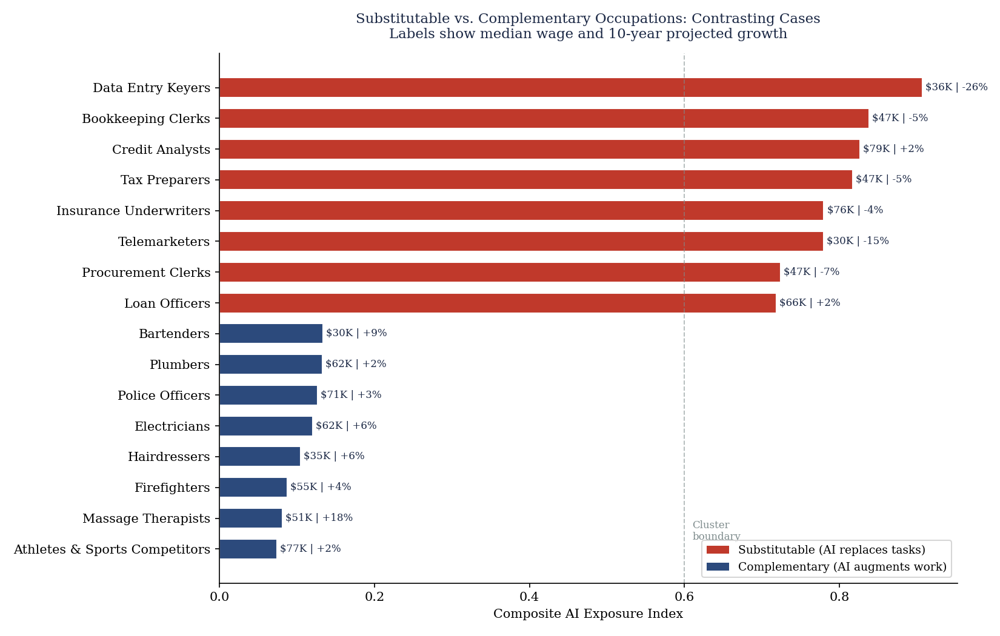
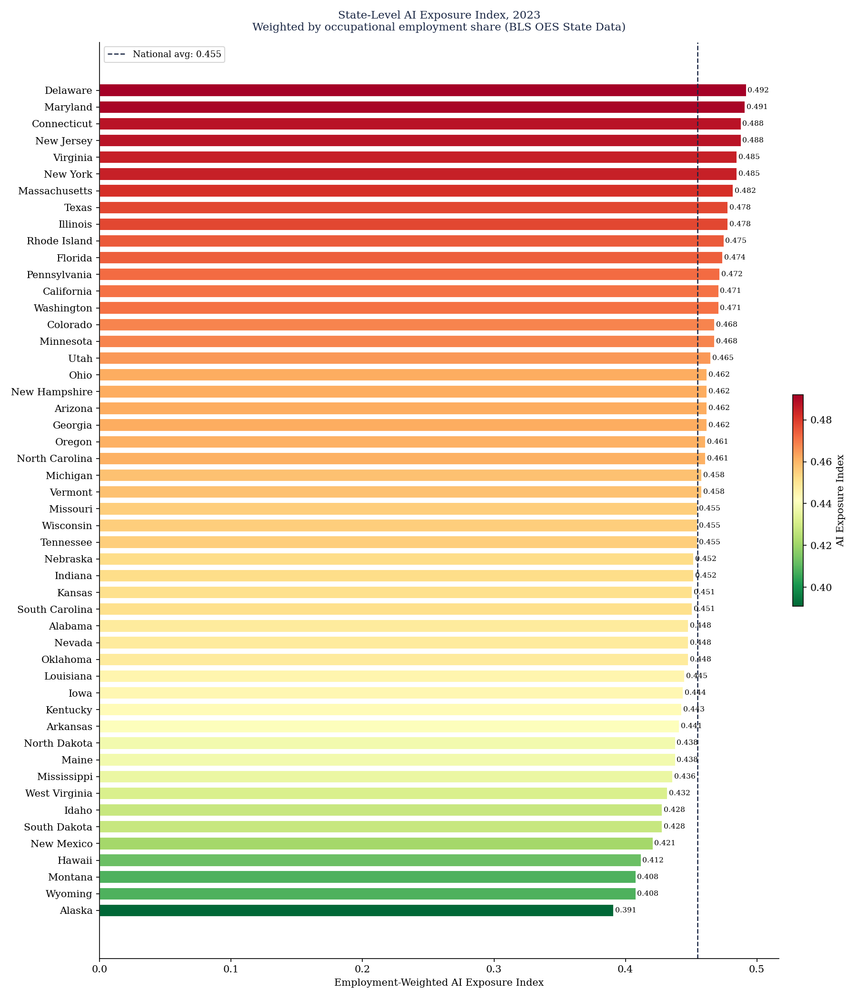
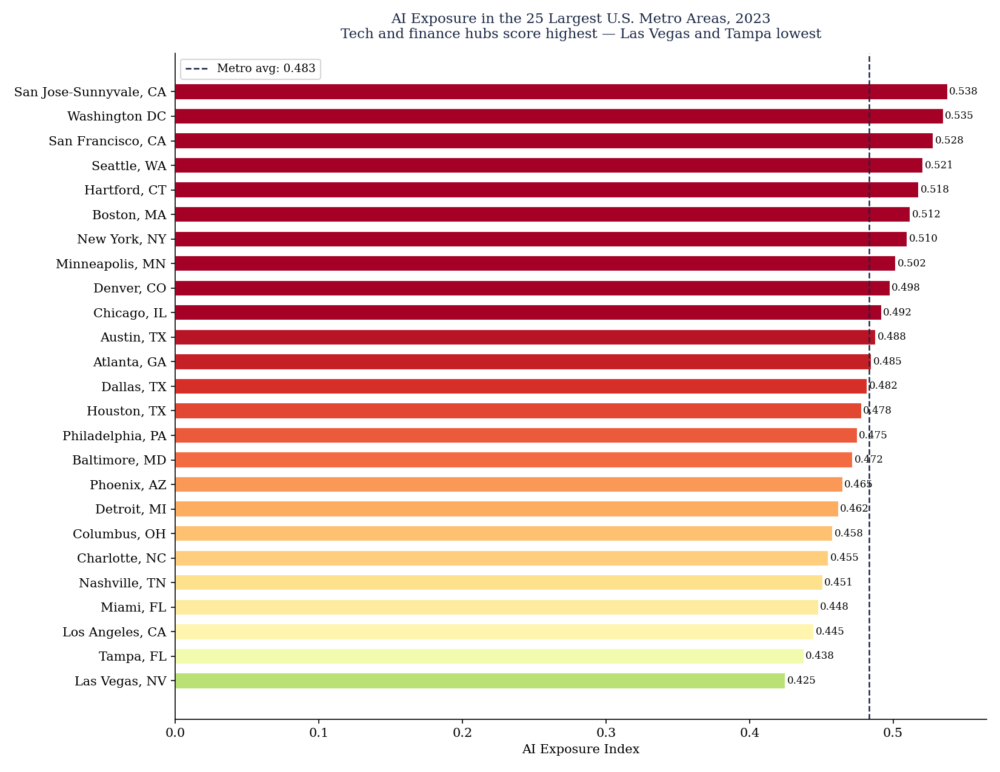
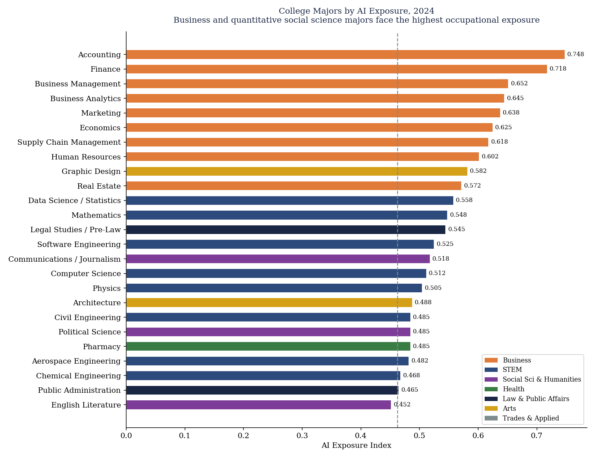
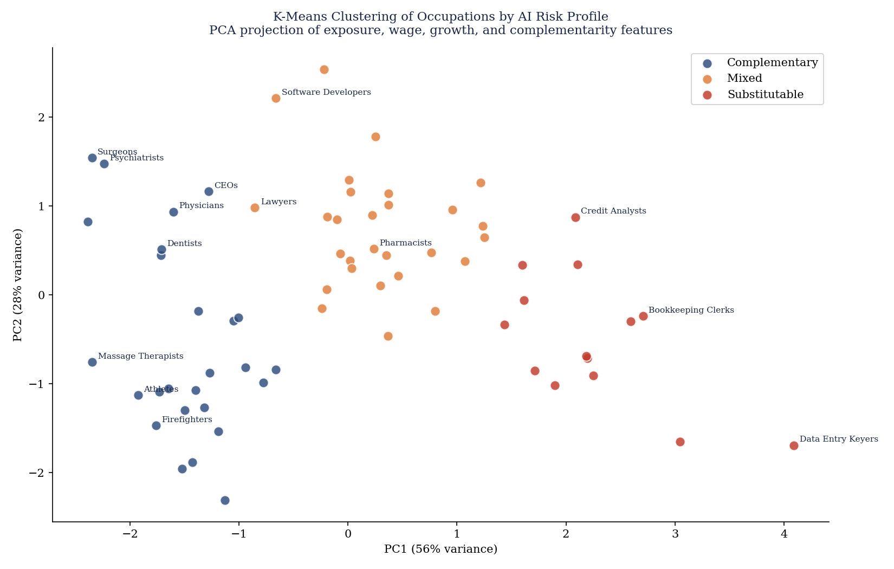

Which Occupations Look Most Exposed: The Task Content Evidence
The ranking does not place factory or construction roles at the top. It places information-processing occupations there. Data entry keyers sit at the top of the index with an exposure score of 0.907, followed by bookkeeping clerks at 0.838, credit analysts at 0.826, tax preparers at 0.817, and insurance underwriters at 0.780. The common feature is not physical routine; it is text-heavy, rules-based, codifiable judgment that contemporary AI systems can increasingly replicate or compress.
This is the core reason the project focuses on the labor market rather than headline AI adoption. Exposure is task-specific. Occupations centered on drafting, checking, sorting, summarizing, and standardized evaluation are much more vulnerable than occupations that require embodied care, relationship management, or technical problem-solving under uncertainty. That is why paralegals, market research analysts, accountants, and customer service representatives all appear in the high-risk tier while many manual occupations do not.
The composite score combines text similarity from O*NET task descriptions with published external exposure measures to reduce dependence on any single index construction choice.


| Occupation | Group | Exposure | Median Wage | Projected Growth |
|---|---|---|---|---|
| Data Entry Keyers | Office & Admin | 0.907 | $36,380 | −26% |
| Bookkeeping Clerks | Office & Admin | 0.838 | $47,440 | −5% |
| Credit Analysts | Business & Finance | 0.826 | $79,010 | 2% |
| Tax Preparers | Business & Finance | 0.817 | $47,400 | −5% |
| Insurance Underwriters | Business & Finance | 0.780 | $76,250 | −4% |
| Telemarketers | Sales | 0.779 | $29,920 | −15% |
The first wave of AI labor-market disruption appears most concentrated in white-collar routine cognition, not in factory-style manual repetition. The occupations at greatest risk are administrative, financial, legal-support, and communication roles built around standardized information handling.
Does Exposure Translate Into Risk: Wages, Growth, and Job Tiers
Exposure by itself does not mechanically imply decline, but the tier comparisons show a strong directional pattern. The high / substitutable tier has mean projected growth of just 0.3% across 9.5 million jobs. The low / complementary tier grows at 6.5% across 13.1 million jobs, while the mixed / transitional tier grows even faster at 8.2%. The more revealing comparison comes from the unsupervised cluster summary: substitutable occupations average just $52.9K in wages and −6.9% projected growth, compared with $101.4K and 6.5% growth in the complementary cluster.
That makes the AI story asymmetric. Some high-exposure jobs remain well-paid, especially in finance and analytics, but exposure is much more dangerous when the work is routine and easily standardized. Technical and quantitative roles can have moderate exposure while still benefiting from AI as a complement. This is why operations research analysts and statisticians appear on the exposure list but retain strong projected growth.


| Tier | Mean Growth | Total Employment | Occupation Count |
|---|---|---|---|
| High / Substitutable | 0.3% | 9,486K | 22 |
| Mixed / Transitional | 8.2% | 7,351K | 20 |
| Low / Complementary | 6.5% | 13,149K | 26 |

High exposure becomes genuine job risk when the work is routinized and codifiable. Complementary occupations are often exposed too, but they pair that exposure with higher wages, stronger projected growth, and task structures that favor augmentation over replacement.
Where Is AI Risk Concentrated: States, Metros, and Sector Mix
Geographically, the highest exposure is concentrated in administrative, finance, and tech-heavy labor markets rather than in the traditional manufacturing belt. At the state level, Delaware ranks first with an exposure score of 0.492, followed by Maryland at 0.491, Connecticut at 0.488, Massachusetts at 0.482, and Illinois at 0.478. California, despite its large technical workforce, still posts a high score of 0.471 because of its scale in finance, services, and white-collar admin work.
The metro rankings make the pattern even clearer. San Jose leads at 0.538, followed by Washington, DC at 0.535, San Francisco at 0.528, Seattle at 0.521, and Hartford at 0.518. AI exposure is therefore highest in cities with large footprints in software, government administration, insurance, finance, and formalized professional services.


| Geography | Exposure | High-Risk Jobs | Dominant Sector |
|---|---|---|---|
| Delaware | 0.492 | 202K | Finance |
| Maryland | 0.491 | 1,245K | Finance |
| Connecticut | 0.488 | 742K | Finance |
| San Jose-Sunnyvale, CA | 0.538 | 1,285K employment | Tech / Software |
| Washington, DC | 0.535 | 3,245K employment | Government / Defense |
| Hartford, CT | 0.518 | 485K employment | Insurance |
Which College Majors Are Most Exposed: Educational Pathways Into Risk and Complementarity
The major-level results are one of the most useful parts of the project because they connect occupational change to the educational pipeline. The most exposed majors are Accounting at 0.748, Finance at 0.718, Business Management at 0.652, and Business Analytics at 0.645. By contrast, many STEM majors show only moderate exposure but much larger complementary shares: Computer Science has exposure of 0.512 with a 62% complementary share, while Data Science / Statistics has exposure of 0.558 with a 68% complementary share.
The contrast matters because high exposure does not mean a major is “bad.” It means its graduate occupations are especially likely to be reorganized. Business majors appear most at risk of direct substitution in clerical-financial workflows, while technical majors appear more likely to use AI as a force multiplier. Health majors are the least exposed overall: Nursing scores just 0.288, Physical Therapy 0.225, and Social Work 0.218, reflecting their reliance on embodied and interpersonal tasks.


| Major | Field | Exposure | Median Earnings | Complementary Share |
|---|---|---|---|---|
| Accounting | Business | 0.748 | $58K | 18% |
| Finance | Business | 0.718 | $72K | 22% |
| Business Analytics | Business | 0.645 | $68K | 38% |
| Computer Science | STEM | 0.512 | $92K | 62% |
| Data Science / Statistics | STEM | 0.558 | $95K | 68% |
| Nursing | Health | 0.288 | $68K | 72% |
The majors most exposed to AI are not the usual STEM targets. They are accounting, finance, and business pathways that feed directly into routine white-collar information work. Technical majors are more exposed than insulated, but they are exposed in a complementary way that is tied to stronger pay and stronger growth.
How the Analysis Was Built
The project combines NLP on O*NET task descriptions with published AI exposure benchmarks from Felten, Webb, and related task-based research. TF-IDF vectorization and cosine similarity are used to score how closely occupational tasks align with current AI capability language. Those measures are combined into a composite exposure index, then joined to BLS wage and employment data, long-run growth projections, ACS geography, and major-to-occupation mappings. K-Means clustering is used to classify occupations into substitutable, complementary, and mixed groups.
Research Foundation
- Felten, E., Raj, M., & Seamans, R. Occupational, Industry, and Geographic Exposure to Artificial Intelligence.
- Webb, M. The Impact of Artificial Intelligence on the Labor Market.
- Acemoglu, D. task-based work on automation and labor-market exposure.
- O*NET 28.0 Task Database for occupational task descriptions and skill content.
- BLS Occupational Employment and Wage Statistics, 2023; BLS Employment Projections, 2022–2032.
- ACS 2022 for state and metro occupational composition and major-to-occupation mapping.